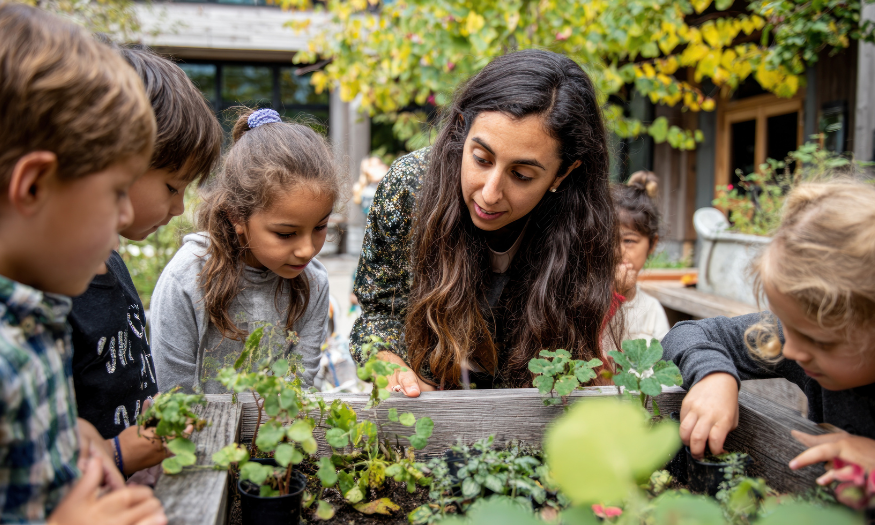

Environmental Study
“ပတ်ဝန်းကျင်ထိန်းသိမ်းစောင့်ရှောက်ရေး လေ့လာမှုမှတ်တမ်း” ကို မှတ်စုစာအုပ်တွင် ကူးရေးထားပါ။ သစ်ပင်များအားစောင့်ရှောက်ရန် မိမိတို့ဆောင်ရွက်နေသောလုပ်ငန်းများကို လေ့လာမှတ်သားပြီး မည်သည့်လုပ်ငန်းများကို ထပ်မံပြုလုပ်နိုင်ကြောင်း စဉ်းစားပါ။

Tree Conservation Campaign
“သစ်ပင်နှင့်သစ်တောများကို မည်သို့ကာကွယ်ထိန်းသိမ်းနိုင်ပုံ” နှင့် ပတ်သက်၍ ပိုစတာကားချပ်များ ရေးသားပြီး သစ်ပင်များကာကွယ်ထိန်းသိမ်းစောင့်ရှောက်ရန် လှုံ့ဆော်ရေး အတွက် စာသင်ခန်း၊ ကျောင်းနှင့် ရပ်ရွာအတွင်းပြသထားသည်။